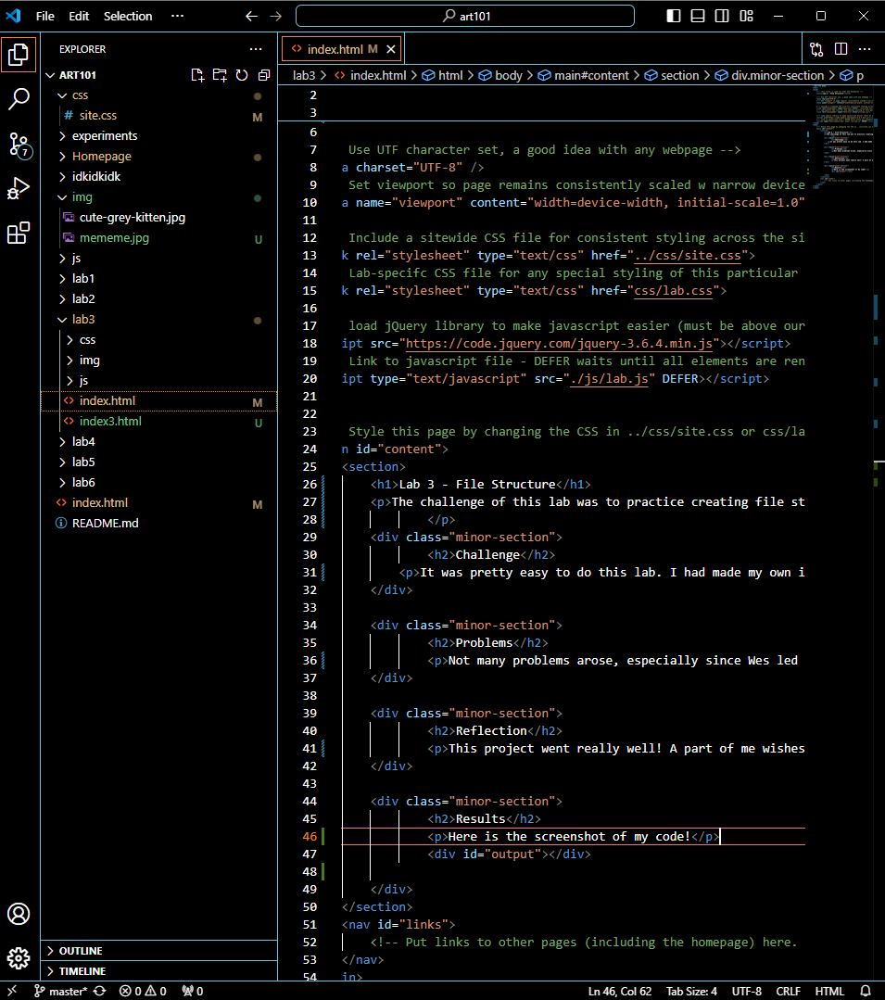

Lab 3 - File Structure
The challenge of this lab was to practice creating file structure and making index.html files !
Challenge
It was pretty easy to do this lab. I had made my own index.html file on lab 2 with Mandy's help, so this was pretty easy breezy !
Problems
Not many problems arose, especially since Wes led us through the first step of this project in lecture on Thurday ! I had a little problem linking my image to this webpage but I figured it out!
Reflection
This project went really well! A part of me wishes we didn't procrastinate so much, lol.
Results
Here is the screenshot of my code!
